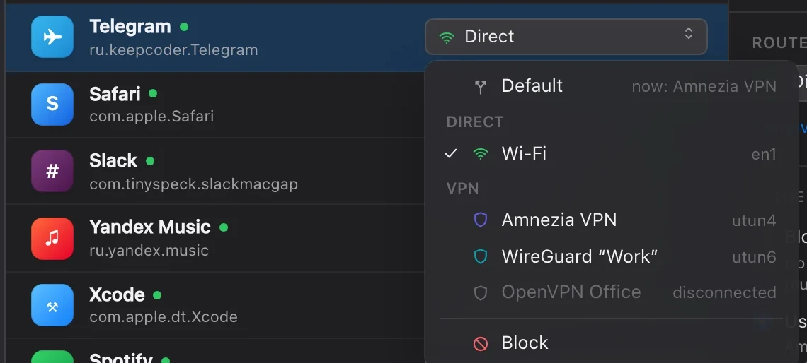
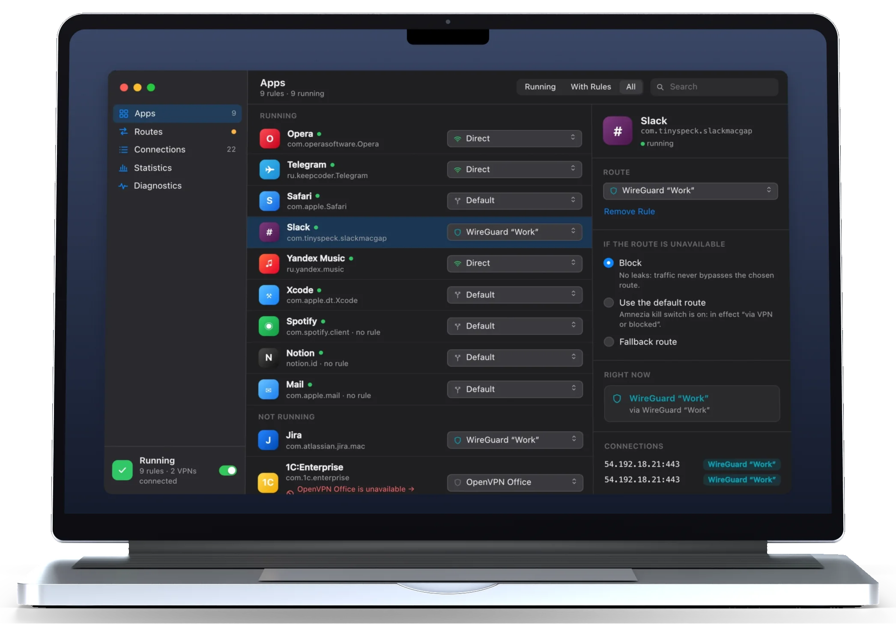
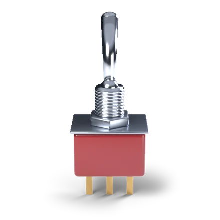
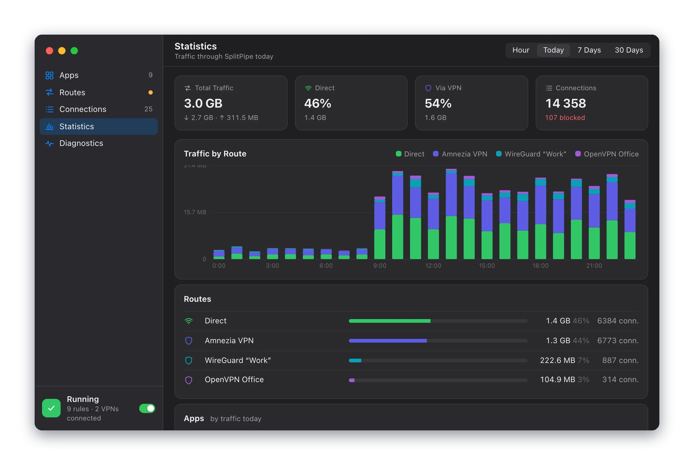
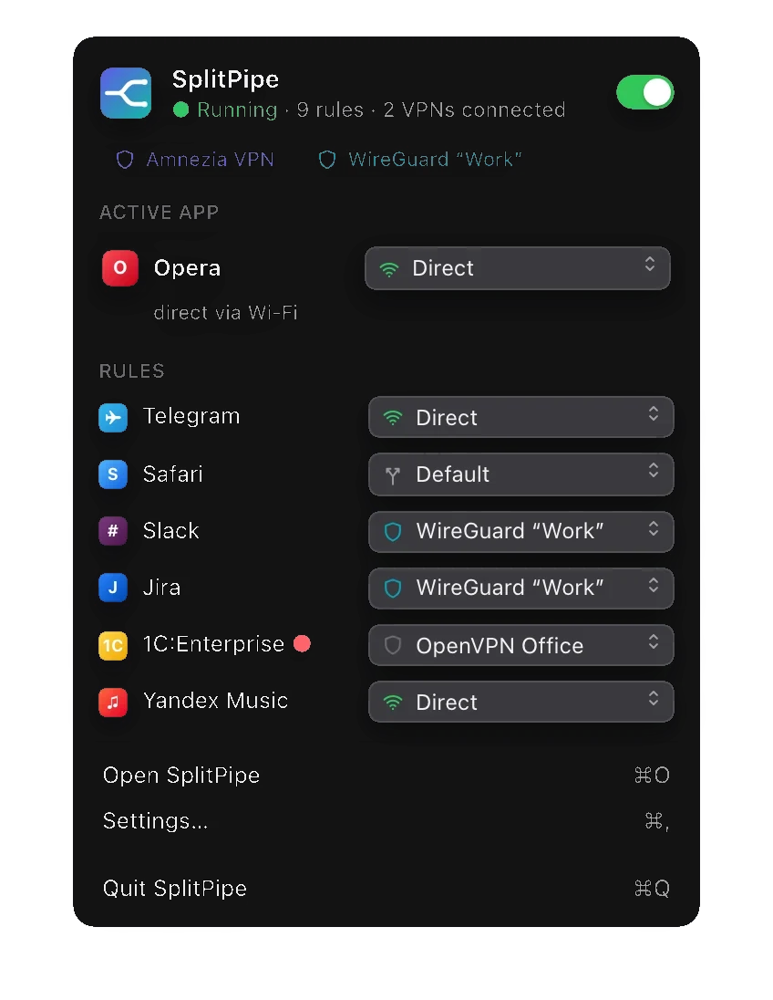

A rule per app
One menu per app: Default, Direct, any of your VPNs, or Block. Changing a rule drops the app's old connections, so the new route applies at once.

SplitPipe for macOS sends each app's traffic where you choose: into a specific VPN, straight out over Wi-Fi around it, or nowhere at all.

Out through Wi-Fi, around the VPN.
Into the work tunnel, and only that one.
Wherever macOS sends traffic now.
No network at all.
A VPN normally takes all of your Mac's traffic. SplitPipe looks at every new connection and sends it through the route you picked for that app.
A macOS network extension sees each new connection and knows which app opened it, including WebKit and helper processes.
SplitPipe finds the app's rule. If that route is down, the rule's fallback decides: block, default route, or another VPN.
The connection leaves through that route's interface: the right VPN tunnel, or Wi-Fi and Ethernet around it.
Rules follow the role of a route, not an interface name, so they survive reconnects, network changes and sleep.
One menu per app: Default, Direct, any of your VPNs, or Block. Changing a rule drops the app's old connections, so the new route applies at once.

AmneziaVPN, WireGuard, OpenVPN and macOS VPN services are found on their own. Send one app through the work VPN and another through yours.
Switch an app for a while. When the time is up, its rule comes back on its own.
Each rule says what happens if its VPN disconnects. Try it for Slack on WireGuard “Work”:
Slack gets no network until WireGuard “Work” is back. Nothing leaves through another route.
Subnets from a file or a URL get their own route. URLs refresh daily, and the first list that matches wins.
# office.txt 10.20.0.0/16 192.0.2.7 2001:db8::/32 ; IPv6 works too
Get a notification when an app goes online for the first time, with buttons for Default, Direct or a VPN. Or give every new app a route right away.
curl, git, ssh and Homebrew tools get rules by path, so they keep their route after an upgrade.
A kill switch blocks everything outside the tunnel, so nothing leaks when the VPN drops. It also blocks the apps you send Direct. SplitPipe's helper opens one narrow gap in it, for SplitPipe alone.

A live feed of connections, traffic by route and app, and checks that lead to the fix.




Every connection with its app, address, protocol, the route it really took and its traffic. Connections that go around SplitPipe are flagged as bypassing it.
Traffic by route and by app for the last hour, today, 7 or 30 days. The extension keeps 30 days of it.
Checks the extension, the helper, each route's external IP, the kill switch and DNS. Problems come with a Fix button.
Every route SplitPipe found, with its interface, local and external IP, and the apps that use it. Test Connection checks TCP and UDP.

Status, connected VPNs, the frontmost app's route and all your rules, one click away.
Status, VPNs, problems and today's traffic on the desktop, and a SplitPipe toggle in Control Center.
Shortcuts actions and splitpipe:// links turn SplitPipe on and off or set an app's route, for good or for a while.
Toggle SplitPipe, or open the route menu for the frontmost app right at the pointer.
Move SplitPipe to Applications and open it. It asks for three system permissions, one at a time, then sets itself up.